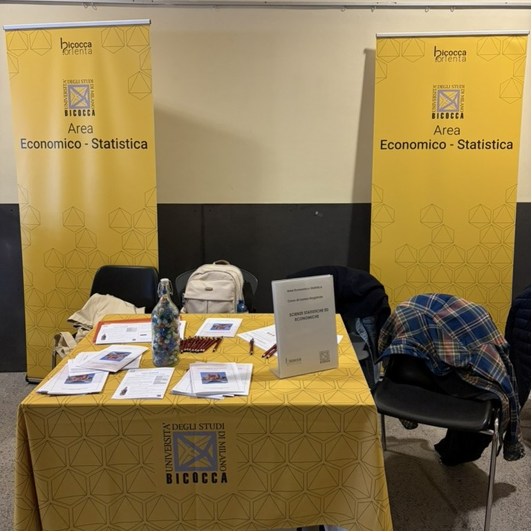
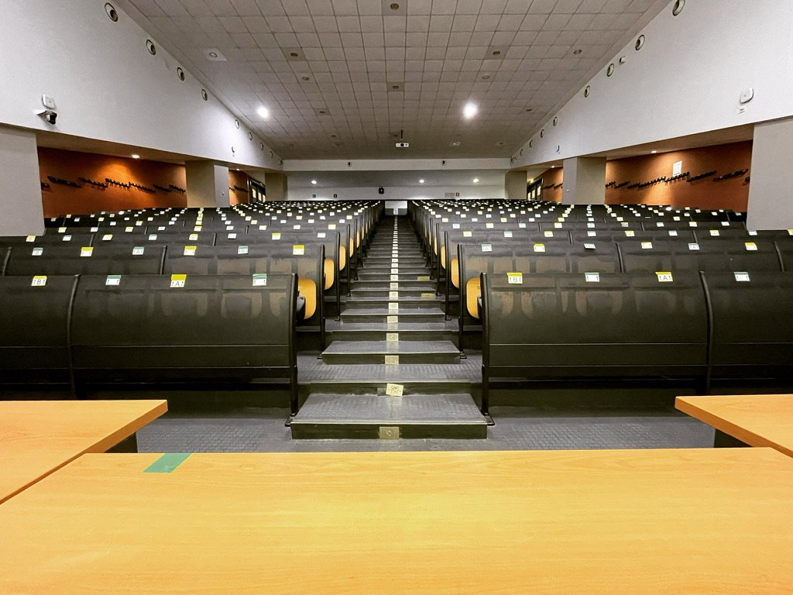

Iscrizioni
Evento gratuito, iscrizione obbligatoria
I posti sono limitati: per partecipare è necessario iscriversi tramite il modulo online.
Una giornata di incontro tra studentesse e studenti dei corsi di laurea triennale (SSE) e magistrale (CLAMSES) in Scienze Statistiche ed Economiche e il mondo del lavoro.
Interverranno ex studenti e ex studentesse di Statistica a Bicocca che oggi lavorano in azienda, nell’impresa e nella finanza, insieme a manager e referenti di aziende che assumono statistici e data scientist.
L’obiettivo è duplice: offrire un orientamento concreto verso i segmenti qualificati del mercato del lavoro più vicini al nostro corso di laurea, e creare un’occasione di networking tra studenti, laureati e aziende.

Quando Giovedì 20 maggio 2027 ore 10.00–17.00
Dove Aula Martini Università di Milano-Bicocca
Per chi Studenti e laureati SSE e CLAMSES
Formato Talk, short talk, tavola rotonda con pranzo e due coffee break
A chi è rivolto

Alle studentesse, agli studenti e ai laureati dei corsi di laurea triennale (SSE) e magistrale (CLAMSES) in Scienze Statistiche ed Economiche, in particolare a chi sta per laurearsi o sta scegliendo come orientare il proprio percorso dopo la laurea.
La partecipazione è gratuita, ma i posti sono limitati e l’iscrizione è obbligatoria.
Programma
20
maggio
giovedì 2027
Programma provvisorio
Orari della giornata
La giornata alterna interventi invitati, una sessione di short talk e una tavola rotonda conclusiva, con una pausa pranzo e due coffee break pensati anche come momenti di incontro.
| Orario | |
|---|---|
| 10.00–10.05 | Saluti istituzionali e introduzione alla giornata |
| 10.05–11.20 | Interventi invitati: due talk |
| 11.20–11.45 | Coffee break |
| 11.45–13.00 | Short talk: dodici interventi da 5 minuti |
| 13.00–14.00 | Pausa pranzo |
| 14.00–15.15 | Interventi invitati: due talk |
| 15.15–15.45 | Coffee break |
| 15.45–16.45 | Tavola rotonda |
| 16.45–17.00 | Chiusura |
Gli orari dei blocchi sono fissati. Relatori e aziende partecipanti saranno annunciati qui man mano che gli interventi vengono confermati.
Organizzazione
L’evento è organizzato da Riccardo Borgoni, Tommaso Rigon, Roberto Ascari e Giorgia Zaccaria, a cui ci si può rivolgere per informazioni.